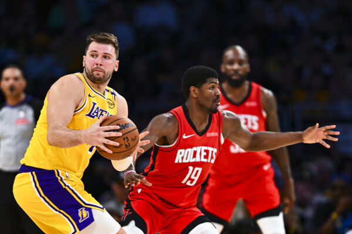

Luka Dončić é um jogador de basquete esloveno que rapidamente se tornou uma estrela na NBA. Começou sua carreira profissional muito jovem no Real Madrid, na Espanha, onde conquistou vários títulos, incluindo a Euroliga. Em 2018, foi selecionado pelo Dallas Mavericks na NBA, onde se destacou como um dos melhores jovens jogadores da liga, conhecido por sua habilidade versátil, visão de jogo e capacidade de pontuar